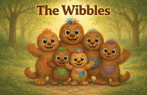

Trade Mark Journal No.2026/005 30 January 2026
UK00004325546 16 January 2026 (9,16,28,41)

- Class 9
- Audio books; Audio cassettes; Audio tapes; Audio recordings; Digital audio tapes; Audio digital tapes; Audio tapes featuring music; Downloadable electronic books; Audio visual recordings; Prerecorded music audio tapes; Digital books downloadable from the Internet; Prerecorded audio tapes featuring music; Pre-recorded audio cassettes; Downloadable series of children’s books; Prerecorded digital audio tapes; Prerecorded audio cassettes; Talking books.
- Class 16
- Books; Fiction books; Comic books; Writing books; Books for children; Printed books; Covers for books; Series of fiction books; Coloring books; Educational books; Fantasy books; Story books; Colouring books; Painting books; Baby books [storybooks]; Picture books; Activity books; Note books; Children's books; Baby books; Pop-up books; Books featuring fantasy stories; Books featuring fictional stories.
- Class 28
- Toys; Toys, games, and playthings; Cuddly toys; Puzzles [toys]; Toys for sandpits; Stuffed toys; Plush toys; Inflatable toys; Toys for babies; Wind-up toys; Plastic toys; Crib toys; Mobiles [toys]; Toys, games and playthings for pet animals; Toys for infants; Wooden toys; Educational toys; Outdoor toys; Bath toys; Infant toys; Electronic toys; Action figures [toys or playthings]; Soft toys; Bouncing toys; Cloth toys; Toy figurines; Musical toys; Clockwork toys; Developmental toys; Fluffy toys; Plastic toys for use in the bath; Stuffed animals [toys]; Fabric toys; Plastic models being toys; Play mats incorporating infant toys [playthings]; Action toys; Stuffed and plush toys; Stuffed plush toys; Plush stuffed toys; Sketching toys; Children's toys; Toy tableware; Plastic character toys; Squeeze toys; Talking toys; Toy mobiles; Stuffed bean-filled toys; Toy animals; Toys for pet animals; Intelligent toys; Toys in the form of puzzles; Soft sculpture toys; Costumes being childrens playthings; Puzzle mats [toys].
- Class 41
- Publication of audio books; Rental of audio books; Multimedia publishing of books; Publication of music books; Publishing of books; Online electronic publishing of books and periodicals; Providing online non-downloadable comic books and graphic novels; Publishing of books and reviews; Publishing of electronic books and journals online; Publication of text books; Publishing of books, magazines; Publishing of electronic books and journals on-line; Publication of books; Books (Publication of -); Production of audio recordings; Production of video and audio recordings; Online publication of electronic books and journals; Publication of electronic books and journals online; Publishing services for books; Publication of educational books; Publishing services for books and magazines; On-line publication of electronic books and journals [not downloadable]; Lending libraries for books; Entertainment services for sharing audio and video recordings; On-line publication of electronic books and journals; Publication of electronic books and journals on-line; On-line publication of electronic books and journals (non-downloadable); Publication of books, reviews; Production of films, other than advertising films; Production of cinema films; Production of films; Production of television and cinema films; Film production, other than advertising films; Production of television films; Showing of films; Production of video films; Leasing of films; Rental of pre-recorded films; Film and video tape film production; Production of motion picture films; Film production; Production of pre-recorded video films; Presentation of movies; Film editing; Movie studios; Studios (Movie -); Production of films for entertainment purposes; Cinema theaters; Rental of motion picture films; Film distribution.
Jane Vicky Nuttall